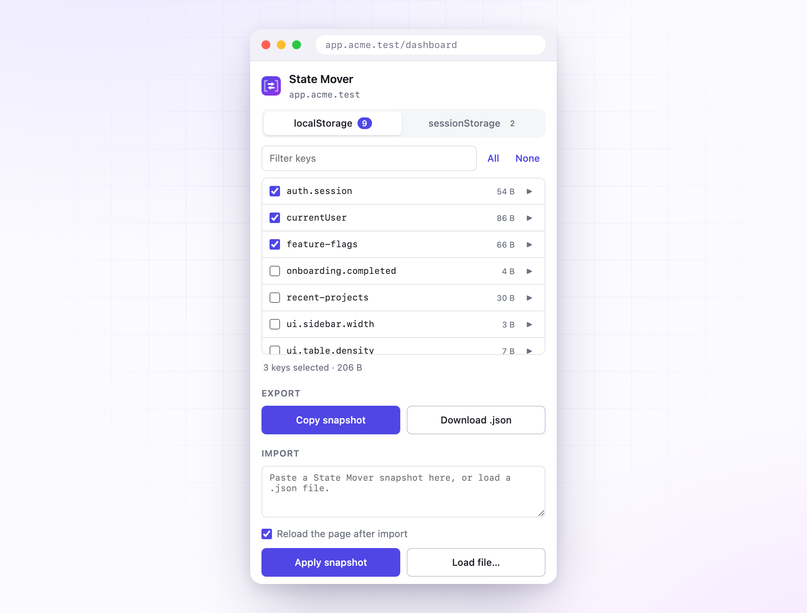

Move localStorage
between environments.
Pick the keys that matter, copy them as a JSON snapshot, paste them into another origin. Signing in again on every environment gets old.
Free and MIT licensed. Chrome, Edge, Brave, Opera, Vivaldi and Firefox.

What it does
One job: lift the exact keys you need off a page where they already exist, and drop them onto the page where you need them.
Every key, listed
Both storages on the active tab, sorted, sized and filterable. No more typing key names from memory.
Peek before you copy
Expand any key to see its value, pretty-printed when it is JSON. Check you grabbed the right token.
Remembers the origin
Keys you tick on one host stay ticked next time you open the popup there. Nothing to save by hand.
Clipboard or file
Copy a snapshot, or save it as a timestamped .json you can commit, share or keep for later.
Reads only what you pick
Opening the popup fetches key names and sizes. Values load only when you expand a row or export.
No network, at all
No server, no analytics, no host permissions. The extension cannot make a request even if it wanted to.
How it works
Four steps, about ten seconds.
- Open the source tab
Go to the page whose storage you want, and click the State Mover icon.
- Tick the keys
Filter if the list is long, and switch between the localStorage and sessionStorage tabs.
- Copy the snapshot
Or download it as JSON if you want to keep it around.
- Apply it on the target
Open the other tab, paste, and hit Apply. Tick the reload box and the page refreshes itself.
Read the full guide, including the snapshot format and what to do when a page blocks extensions.
Install
Not on the extension stores yet. Until it is, build from source. It takes one command and there is no toolchain to install.
git clone https://github.com/animeshsinghweb/StateMover.git
cd StateMover
./scripts/build.shThat writes two ready-to-load folders: dist/chromium/ and dist/firefox/.
Load unpacked wants a folder, not a zip. The
.zip files next to those folders are for uploading to the
stores. If your file picker greys them out, that is why. Select the
folder instead.
| Browser | Steps |
|---|---|
| Chrome, Brave, Vivaldi | chrome://extensions → enable Developer mode → Load unpacked → pick dist/chromium |
| Edge | edge://extensions → enable Developer mode → Load unpacked → pick dist/chromium |
| Opera | opera://extensions → enable Developer mode → Load unpacked → pick dist/chromium |
| Firefox 142+ | about:debugging#/runtime/this-firefox → Load Temporary Add-on → pick dist/firefox/manifest.json |
Prefer not to build? Grab a package from the latest release. Firefox unloads temporary add-ons when you close the browser; Chromium browsers keep an unpacked extension until you remove it.